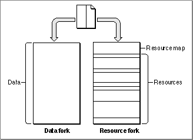

Legacy Document
Important: The information in this document is obsolete and should not be used for new development.
Important: The information in this document is obsolete and should not be used for new development.


File Forks
Many operating systems treat a file simply as a named, ordered sequence of bytes (possibly terminated by a byte having a special value that indicates the end-of-file). As illustrated in Figure 1-1, however, each Macintosh file has two forks, known as the data fork and the resource fork.A file's resource fork contains that file's resources. If the file is an application, the resource fork typically contains resources that describe the application's menus, dialog boxes, icons, and even the executable code of the application itself. A particularly important resource is the application's
'SIZE'resource, which contains information about the capabilities of the application and its run-time memory requirements. If the file is a document, its resource fork typically contains preference settings, window locations, and document-specific fonts, icons, and so forth.Figure 1-1 The two forks of a Macintosh file

A file's data fork contains the file's data. It is simply a series of consecutive bytes of data. In a sense, the data fork of a Macintosh file corresponds to an entire file in operating
systems that treat a file simply as a sequence of bytes. The bytes stored in a file's data fork do not have to exhibit any internal structure, unlike the bytes stored in the resource fork (which consists of a resource map followed by resources). Rather, your application is responsible for interpreting the bytes in the data fork in whatever manner is appropriate. The data fork of a document file might, for example, contain the text of a letter.Even though a Macintosh file always contains both a resource fork and a data fork, one or both of those forks can be empty. Document files sometimes contain only data (in which case the resource fork is empty). More often, document files contain both resources and data. Application files generally contain resources only (in which case, the data fork is empty). Application files can, however, contain data as well.
Whether you store specific data in the data fork or in the resource fork of a file depends largely on whether that data can usefully be structured as a resource. For example, if you want to store a small number of names and telephone numbers, you can easily define a resource type that pairs each name with its telephone number. Then you can read names and corresponding numbers from the resource file by using Resource Manager routines. To retrieve the data stored in a resource, you simply specify the resource type and ID; you don't need to know, for instance, how many bytes of data are stored in that resource.
In some cases, however, it is not possible or advisable to store your data in resources. The data might be too difficult to put into the structure required by the Resource Manager. For example, it is easiest to store a document's text, which is usually of variable length, in a file's data fork. Then you can use File Manager routines to access any byte or group of bytes individually.
Even when it is easy to define a resource type for your data, limitations on the Resource Manager might compel you to store your data in the data fork instead. A resource fork can contain at most about 2700 resources. More importantly, the Resource Manager searches linearly through a file's resource types and resource IDs. If the number of types or IDs to be searched is large, accessing the resource data can become slow. As a rule of thumb, if you need to manage data that would occupy more than about 500 resources total, you should use the data fork instead.
Because the Resource Manager is of limited use in storing large amounts of user-generated data, most of the techniques in "Using Files" (beginning on page 1-12) illustrate the use of File Manager routines to manage information stored in a file's data fork. See the section "Using a Preferences File" on page 1-36 for an example of the use of the Resource Manager to access data stored in a file's resource fork.
- IMPORTANT
- In general, you should store data created by the user in a file's data fork, unless the data is guaranteed to occupy a small number of resources. The Resource Manager was not designed to be a general-purpose data storage and retrieval system. Also, the Resource Manager does not support multiple access to a file's resource fork. If you want to store data that can be accessed by multiple users of a shared volume, use the
data fork.